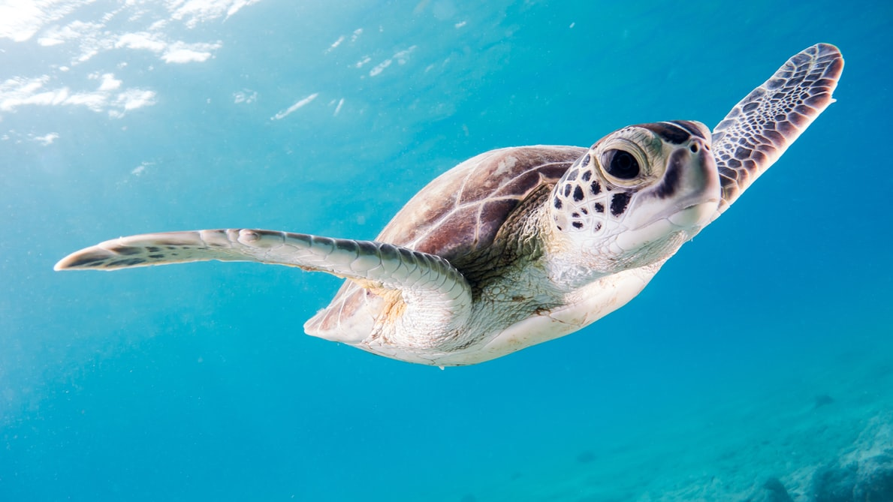
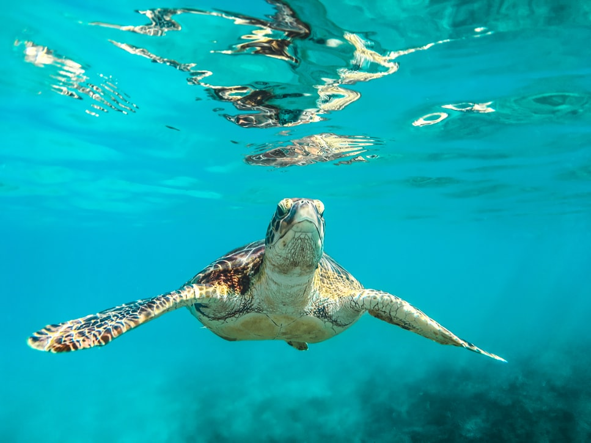

Rùa biển (Chelonioidea) là một liên họ bò sát biển trong bộ Rùa, sinh sống ở tất cả các đại dương trên thế giới ngoại trừ vùng Bắc Cực. Riêng loài rùa lưng phẳng thì chỉ được tìm thấy ở vùng biển phía bắc Australia.
Trong số 7 loài rùa biển, tất cả đều được liệt kê trong Sách đỏ IUCN về các loài bị đe dọa hoặc là nguy cấp hay cực kỳ nguy cấp. Mặc dù rùa biển thường đẻ khoảng 100 trứng mỗi lần nhưng hầu như chỉ có một rùa con sống sót đến tuổi trưởng thành. Trong tự nhiên, rùa biển con thường bị đe dọa bởi các loài động vật ăn thịt bao gồm cá mập, gấu, báo đốm Bắc Mỹ, cáo hay các loài chim biển, và đặc biệt là con người.
Biến đổi khí hậu cũng có thể đe dọa đối với rùa biển bởi trứng rùa biển sinh ra cá thể đực hay cái phụ thuộc vào nhiệt độ.
Ngoài ra, rùa biển còn bị mối đe dọa đến từ việc săn bắt cá không đúng phương pháp, tình cờ làm nhiều con rùa biển mắc lưới, không ngoi lên hít thở không khí nên đã bị chết
Rùa biển đóng vai trò quan trọng trong hệ sinh thái đại dương và bãi biển. Trong các đại dương, các loại rùa biển, đặc biệt là rùa biển xanh, là một trong số ít các loài động vật ăn cỏ biển (còn có lợn biển) mọc ở các vùng đáy biển. Cỏ biển không được để mọc quá dài, và đây là khu vực cần thiết cho nhiều loài cá và sinh vật biển khác. Thảm cỏ biển mất đi sẽ gây ra một phản ứng dây chuyền, tác động tiêu cực đến đời sống của rất nhiều loài sinh vật biển và con người.
Bãi biển và cồn cát phụ thuộc vào các loài thực vật để chống lại sự xói mòn. Mỗi khi rùa biển vào đẻ trứng sẽ mang theo một lượng lớn các loài thực vật đại dương vào, cùng với đó là một nguồn dinh dưỡng cho thực vật cồn cát có trong trứng rùa khi rùa con nở ra. Hàng năm, rùa biển đẻ một số lượng trứng vô cùng lớn trên các bãi biển.
Cùng với đó, rùa biển cũng là loài bò sát có vai trò vô cùng quan trọng đối với con người. Chúng là một loại thực phẩm được ưa chuộng trên khắp thế giới với lượng protein rất lớn. Mai và yếm của rùa biển được sử dụng làm vật trang trí và sản xuất đồ gia dụng. Đối với con người, đặc biệt là những người khai thác đánh bắt thủy sản, vì rùa biển là sinh vật tạo môi trường cỏ biển tốt để nhiều loài sinh vật biển như cua, ốc, sò, cá, động vật giáp xác. Nhiều vùng thấy được tầm quan trọng của rùa biển đã vĩnh viễn không săn bắt rùa biển mà thay vào đó, những khu vực bảo tồn đã được thành lập, thu hút khách du lịch, phát triển kinh tế gắn liền với phát triển bền vững.
Cơ thể ẩn trong bộ giáp xương hợp thành lớp mai (mảng giáp xương trên) và yếm (mảng giáp dưới). Mai và yếm phủ nhiều lớp sừng là keratin). Có khoảng 58 loài thuộc họ Rùa cạn. Các loài rùa cạn thường phân bố ở vùng nhiệt đới và xích đạo.
Phần lớn rùa cạn ăn thực vật, như cỏ, rong, lá xanh, hoa và một số hoa quả. Rùa cảnh thường được cho ăn cỏ linh lăng, cỏ ba lá, bồ công anh, và một số loại rau diếp. Một số loài rùa thỉnh thoảng ăn giun hay côn trùng, nhưng cho ăn nhiều protein quá sẽ gây biến dạng cho bộ mai và không tốt cho sức khỏe. Không nên cho rùa ăn thức ăn dành cho chó mèo, vì chúng không chứa các chất dinh dưỡng cần thiết cho động vật bò sát; nhất là vì chúng chứa quá nhiều protein. Thêm vào đó, không nên giả định là tất cả các loại rùa nuôi nhốt đều có chung một khẩu vị. Các loại rùa khác nhau đòi hỏi các chất dinh dưỡng khác nhau. Để biết chính xác loại rùa nào cần loại thức ăn nào, cần tham khảo thêm ý kiến bác sĩ thú y, hay người nghiên cứu bò sát.